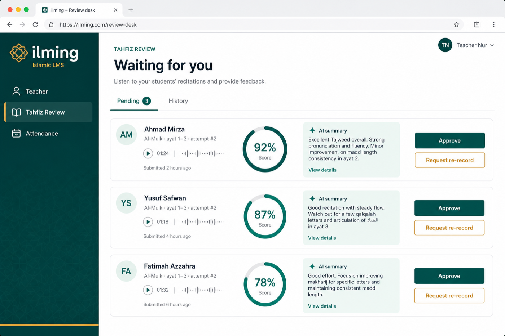
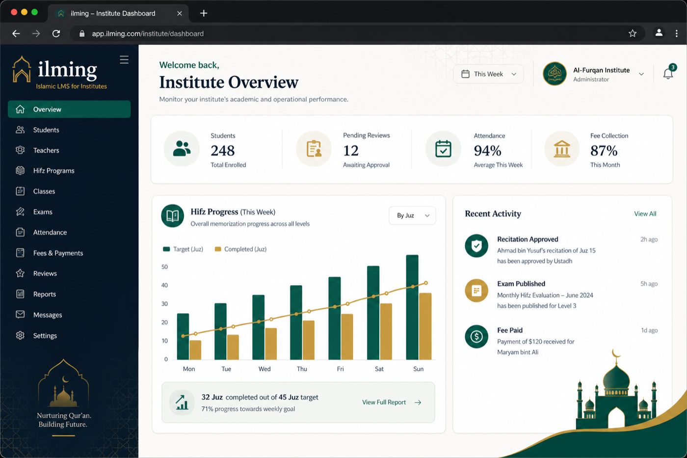
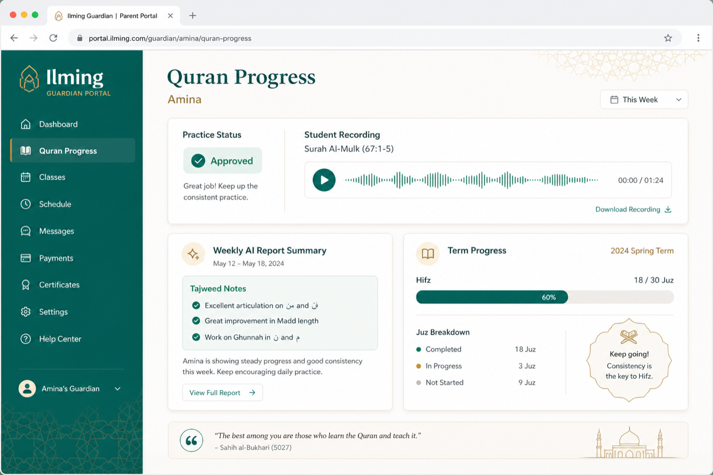

Hifz tracking, AI-guided practice, attendance, exams, fees, and parent visibility —
so staff spend time with students, not spreadsheets.
Web CRMiOS & AndroidGuardian portalUK · UAE · India · GCCNext.js · Expo · Node
01
How Hifz actually runs
Teacher assigns. Student practises. One recording. Ustadh decides. Parent sees.
One loop. No WhatsApp audio dump. Approval never leaves the teacher.
01 Assign
Portion
Teacher sets surah & ayah by batch, with a due date.
02 Practise
Practice
On the web, the student listens, repeats the missed word, and tries the ayah again.
03 Send
One recording
Practice retries stay off the queue. The student sends one recording when the ayah is ready.
04 Approve
Ustadh
Play audio, read the summary, approve or ask a re-record.
05 Parent
Sees
Weekly AI report, term progress, playable approved recitations.
02
Same institute login
Four apps. One stack.
The web desk is app.ilming.io. Institute, teacher, student, and guardian each have an iOS and Android app.
iOS & Android
Institute
Reviews, attendance, exams
Students, teachers, batches
Live classes and results
iOS & Android
Teacher
Recitation review queue
Classes, attendance, exams
Live classes and inbox
iOS & Android
Student
Hifz desk and Academy
Map, goals, revision, history
Lessons, exams, fees, live
iOS & Android
Guardian
Today’s Hifz and progress
Attendance and fees
Results, lessons, and family
03
Web practice
AI Hafazan Teacher on the web
Listen. Repeat the missed word. Send one recording when the ayah is ready.
Verified Quran audio. English coaching in one voice.
Word check only. The Ustadh makes the Tajweed judgement.
Talking face is a web add-on, piloted one class at a time.
04
Teacher
Review desk — AI assists, Ustadh decides
Pending recitations land in one queue. Play, read the AI summary, approve or re-record.
Daily Hifz sheet for the batch
Muraja'a planner & at-risk list
Final approval never leaves the teacher
app.ilming.io/teacher/tahfiz

05
Institute admin
The whole institute on one desk
Students, pending reviews, attendance, and fee collection — without five tools.
Bulk import students, teachers, batches
Families, notify households, teacher tracking
Payouts to tutors via Razorpay
app.ilming.io

06
Parents
Guardians see progress without calling the office
Practice status, weekly AI report, term progress, attendance, and fees — EN or Arabic RTL.
Play approved recordings
Family view for siblings
Pay online, PDF receipts
app.ilming.io/guardian

07
Beyond Hifz — live today
The full Islamic LMS in one glance
Everything the institute runs daily. Not a roadmap.
Hifz deskMap, goals, daily sheet, Muraja'a, at-riskHafazan teacherPractise on the web, then one recording for the UstadhAttendanceLive class, lesson, exam, Quran practiceExamsBanks, security, verification, resultsFeesAssign, remind, Razorpay / Stripe / FPX, PDF receiptsFamiliesLink guardians, notify the householdLive classesZoom, Meet, or custom — with remindersCertificatesArabic PDFs + public verificationTeacher payoutsPay tutors; they see earningsMessagingBatch chat, in-app, email, pushBulk importStudents, teachers, batches in one go10 languagesArabic & Urdu RTL · EN, FR, HI, TA…
08
Student app
Four tabs. Full academy in the pocket.
One of four apps. Institute, teacher, and guardian have their own. Practice stays on the web.
Tab 1
Home
Continue practice, insights, notifications, AI tutor banner.
Tab 2
Hifz
Map · Practice · Progress · Goals · Revision · History.
Tab 3
Academy
Lessons, exams, attendance, fees, live, certificates, study plan.
Tab 4
More
Reports, history, and settings. Parents use the guardian app.
09
Engineering
Built as a modern, production stack
One TypeScript platform — web CRM, four mobile apps, and one API.